极限四则运算法则：
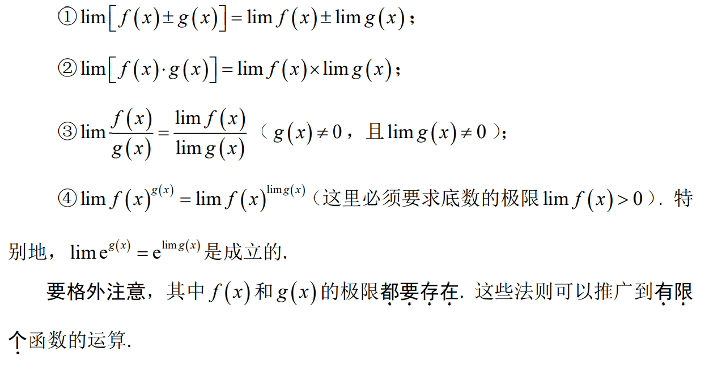
前提：函数连续 $$ \lim_{x \to 0}f(sinx)=f(\lim_{x \to 0}sinx) $$
计算： $$ \lim_{x \to 0}[x] \\x\to 0^+:0 \\x \to 0^-:-1 \\故极限不存在 $$
$$ \lim_{x \to +\infty}\frac{x+sinx}{x} $$
反例：前几天高中同学发来私信： $$ 求：\lim_{x\to\infty}nln(\frac{n-2}{n+1}) $$ 违背的规则：乘法规则需要两个极限都存在
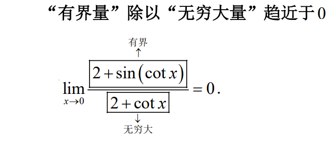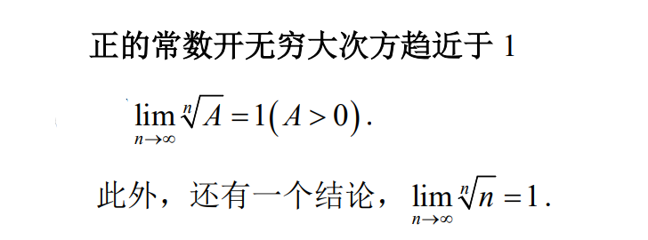
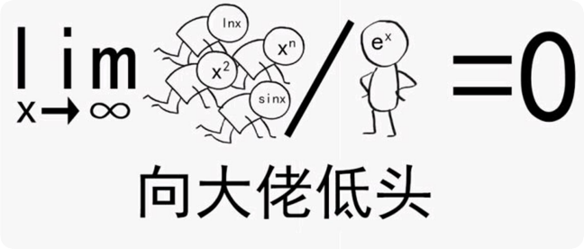
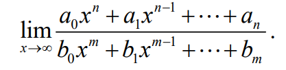
对于这种形式的极限，我们可以把分子和分母同时除以函数中出现的x的最高次幂。
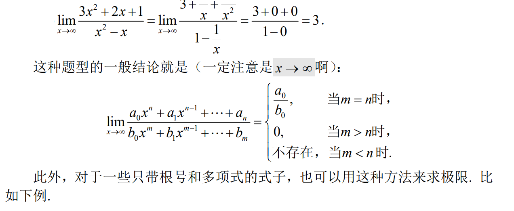 $$ \lim_{x\to +\infty}\frac{\sqrt{x^2-x+2}}{2x+1}\\=\lim_{x\to+\infty}\frac{\sqrt{1-\frac{1}{x}+\frac{2}{x^2}}}{2+\frac{1}{x}}\\=\frac{1}{2}\\除此之外，有一些题目需要先化为无穷小之后再利用其他方法进行下一步的运算，我们后面继续讲 $$
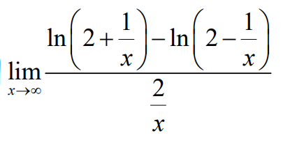
$$ \lim_{x\to0}\frac{(2+x)^{\frac13}-2^{\frac13}}{x} $$
$$ 求极限：l=\lim_{x\to\infty}(-1)^nsin(\sqrt{n^2+1}\pi)\\=\lim_{x\to \infty}sin((\sqrt{n^2+1}-n)\pi)\\ 则l\leq\lim_{x\to\infty}\sqrt{n^2+1}-n=\lim_{x\to\infty}\frac{1}{\sqrt{n^2+1}+n}=0\\ l\geq0 \\故l=0 $$
$$ l=\lim_{n\to \infty}sin\frac{\pi}{\sqrt{n^2+1}}+sin\frac{\pi}{\sqrt{n^2+2}}+...+sin\frac{\pi}{\sqrt{n^2+n}}\\ l\leq\lim_{n\to \infty}n\times sin\frac{\pi}{\sqrt{n^2+1}}<=\lim_{n\to \infty}\frac{n\pi}{\sqrt{n^2+1}}=\lim_{n\to \infty}\frac{\pi}{1+\frac{1}{n^2}} $$
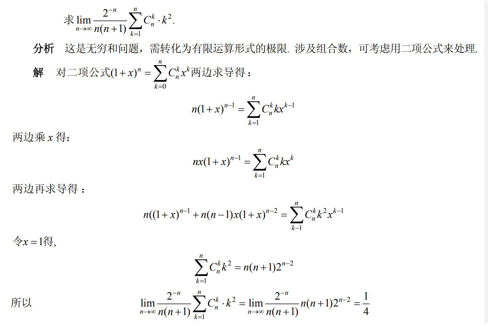
与积分结合
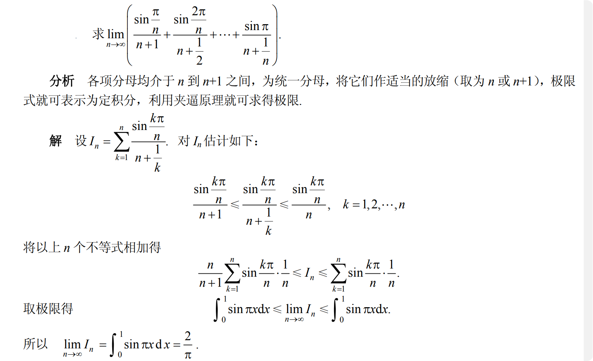
开始之前，我们需要准备一些常用的变形公式，可以选择性地记一部分
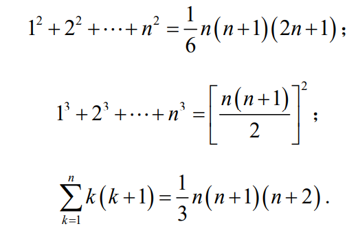
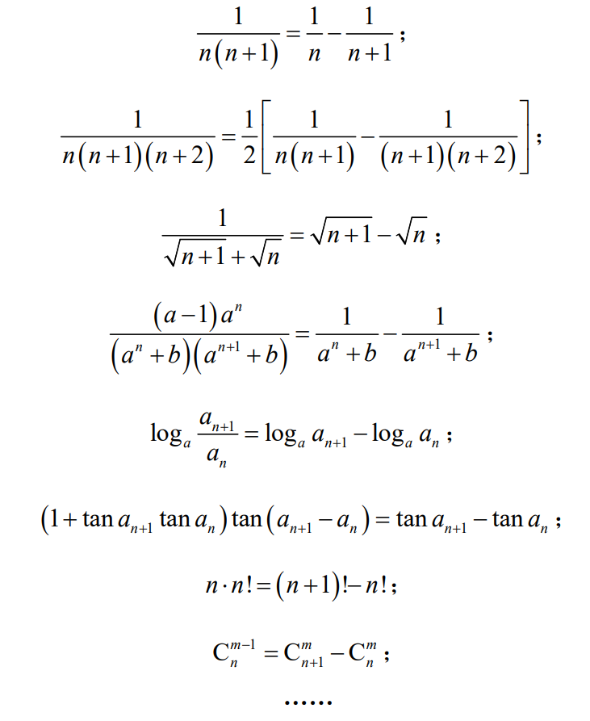 $$ 求极限：\lim_{n\to\infty}cos\frac{x}{2}cos\frac{x}{2^2}...cos\frac{x}{x^n}\ $$ 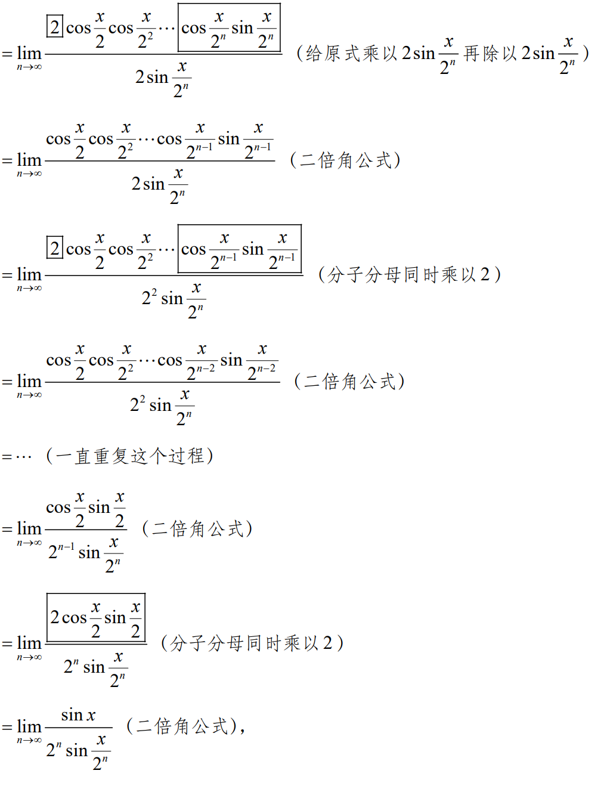
$$ 形如：1^\infty 、\infty^0这类的极限，可以取对数来进行运算 $$
$$ l=\lim_{x\to0}(\frac{arcsinx}x)^{\frac1{x^2}}\\=exp{{lim_{x\to0}\frac1{x^2}ln}(\frac{arcsinx}{x})}\\接下来怎么求呢？我们在 等价无穷小 中来看 $$
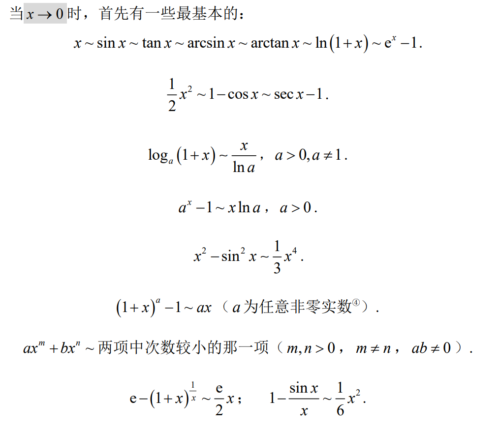 $$ {lim_{x\to0}\frac1{x^2}ln}(\frac{arcsinx}{x})\\=lim_{x\to0}\frac{1}{x^2}ln(\frac{arcsinx-x}x+1)\\=lim_{x\to0}\frac{arcsinx-x}{x^3}\\接下来又该怎么求呢？我们在泰勒展开中找到答案 $$
$$ \lim_{x\to0}\frac{e^{tanx}-e^{x}}{x-sinx}x $$
$$ \lim_{x\to0}\frac1{ln(1+x)}(\frac1x-\frac1{sinx}) $$
结合取对数
$$ \lim_{x\to0^+}{(e^x-1)^{\frac1{lnx}}} $$
$$ 求无穷小量u(x)={(\frac{1+2cosx}{3})}^{x^3}-1(x\to0)的主部和阶数 $$
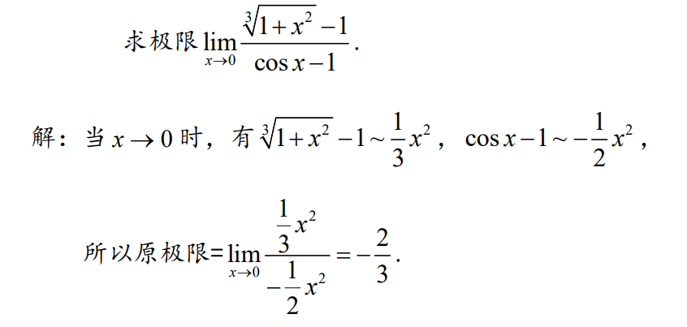
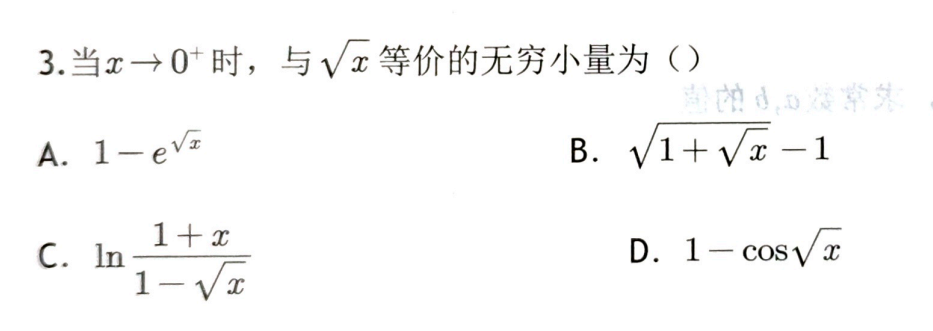
注意洛必达和等价无穷小、中值定理、泰勒公式结合使用，提高效率
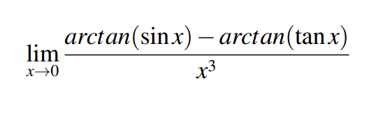
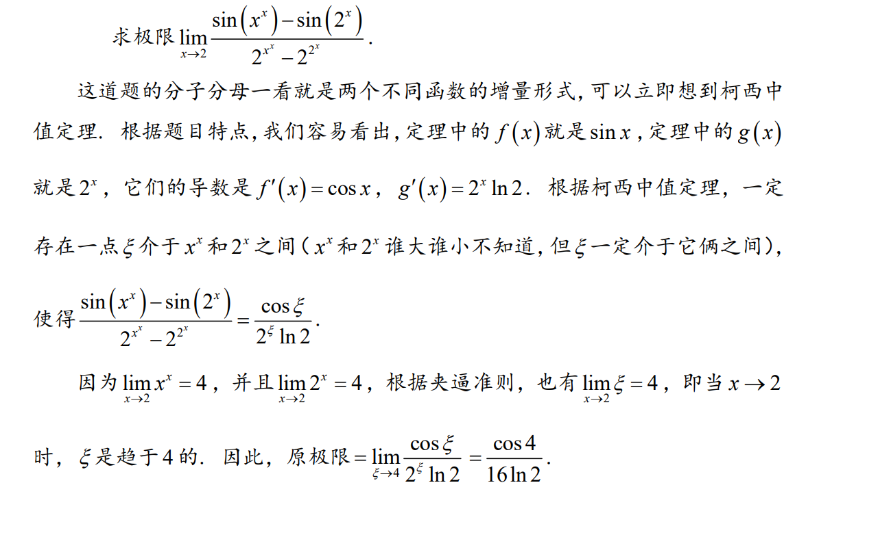
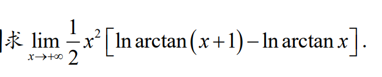 $$ \lim_{x\to +\infty}\frac{1}{2}x^2[\ln\arctan (x+1)-\ln \arctan x]\\=\lim_{x\to +\infty}\frac{x^2}{2}\frac{1}{[1+(x+\theta)^2]\arctan (x+\theta)}\\=\lim_{x\to +\infty}\frac{x^2}{1+(x+\theta)^2}\times\frac1{2\arctan (x+\theta)}\\=1\times \frac1{2\times \frac{\pi}{2}}\\=\frac1\pi $$
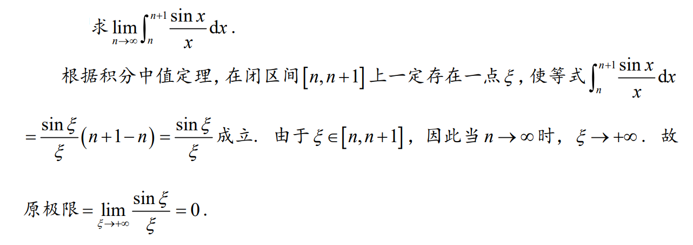
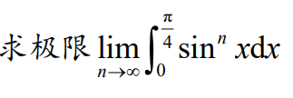
$$ \begin{aligned} e^{x}&=\sum_{n=0}^{\infty} \frac{1}{n !} x^{n}=1+x+\frac{1}{2 !} x^{2}+\cdots \in(-\infty,+\infty) \\ \sin x&=\sum_{n=0}^{\infty} \frac{(-1)^{n} }{(2 n+1) !} x^{2 n+1}=x-\frac{1}{3 !} x^{3}+\frac{1}{5 !} x^{5}+\cdots, x \in(-\infty,+\infty) \\ \cos x&=\sum_{n=0}^{\infty} \frac{(-1)^{n} }{(2 n) !} x^{2 n}=1-\frac{1}{2 !} x^{2}+\frac{1}{4 !} x^{4}+\cdots, x \in(-\infty,+\infty) \\ \ln (1+x)&=\sum_{n=0}^{\infty} \frac{(-1)^{n} }{n+1} x^{n+1}=x-\frac{1}{2} x^{2}+\frac{1}{3} x^{3}+\cdots, x \in (-1,1] \\ \frac{1}{1-x}&=\sum_{n=0}^{\infty} x^{n}=1+x+x^{2}+x^{3}+\cdots, x \in(-1,1) \\ \frac{1}{1+x}&=\sum_{n=0}^{\infty}(-1)^{n} x^{n}=1-x+x^{2}-x^{3}+\cdots, x \in(-1,1)\\ (1+x)^{\alpha}&=1+\sum_{n=1}^{\infty} \frac{\alpha(\alpha-1) \cdots(\alpha-n+1)}{n !} x^{n}=1+\alpha x+\frac{\alpha(\alpha-1)}{2 !} x^{2}+\cdots, x \in(-1,1) \\ \arctan x&=\sum_{n=0}^{\infty} \frac{(-1)^{n} }{2 n+1} x^{2 n+1}=x-\frac{1}{3} x^{3}+\frac{1}{5} x^{5}+\cdots+ x \in[-1,1] \\ \arcsin x&=\sum_{n=0}^{\infty} \frac{(2 n) !}{4^{n}(n !)^{2}(2 n+1)} x^{2n+1}=x+\frac{1}{6} x^{3}+\frac{3}{40} x^{5}+\frac{5}{112} x^{7}+\frac{35}{1152} x^{9}+\cdots+, x \in(-1,1)\\ \tan x&=\sum_{n=1}^{\infty} \frac{B_{2 n}(-4)^{n}\left(1-4^{n}\right)}{(2 n) !} x^{2 n-1}=x+\frac{1}{3} x^{3}+\frac{2}{15} x^{5}+\frac{17}{315} x^{7}+\frac{62}{2835} x^{9}+\frac{1382}{155925} x^{11}+\frac{21844}{6081075} x^{13}+\frac{929569}{638512875} x^{15}+\cdots,x\in (-\frac{\pi}{2},\frac{\pi}{2})\\ (1+x)^{\frac1x}&=e\times (1-\frac x2+\frac{11x^2}{24}+\cdots)+o(x^2), x \in(-1,1) \\ \end{aligned} $$
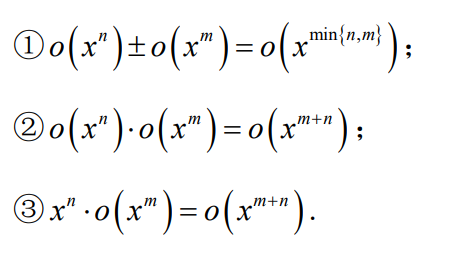
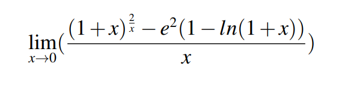
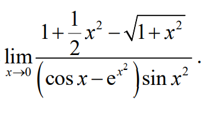
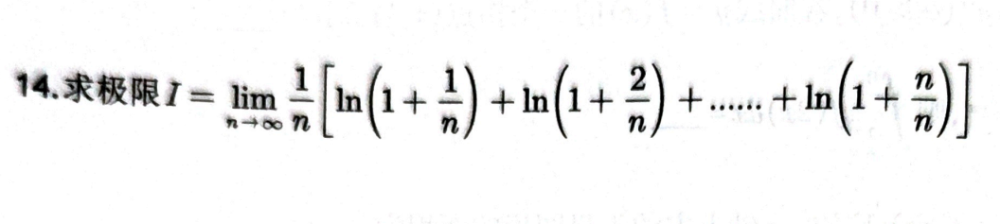
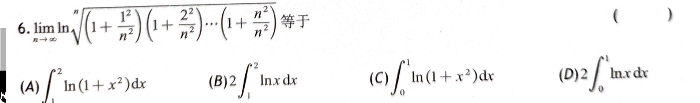

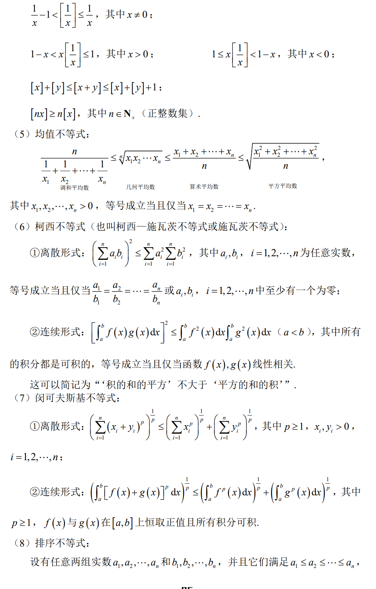
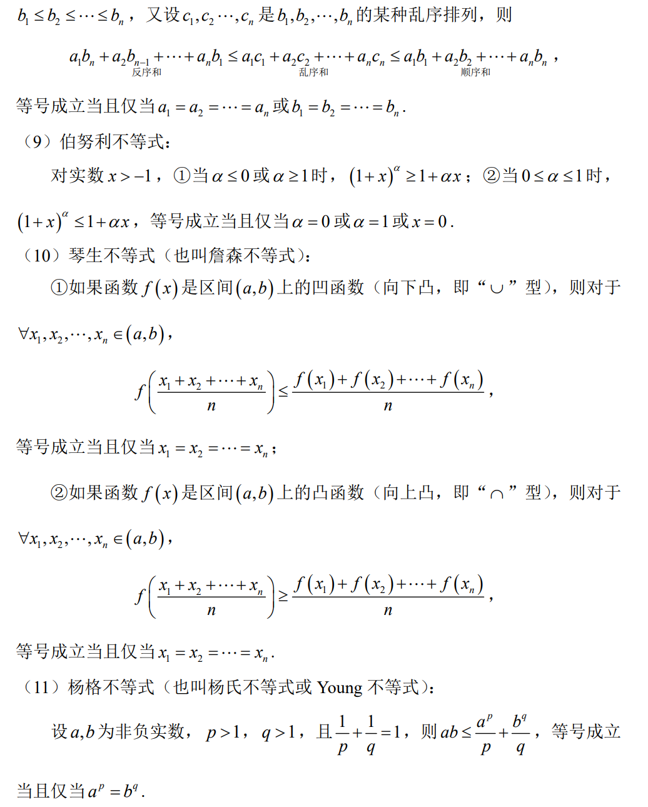